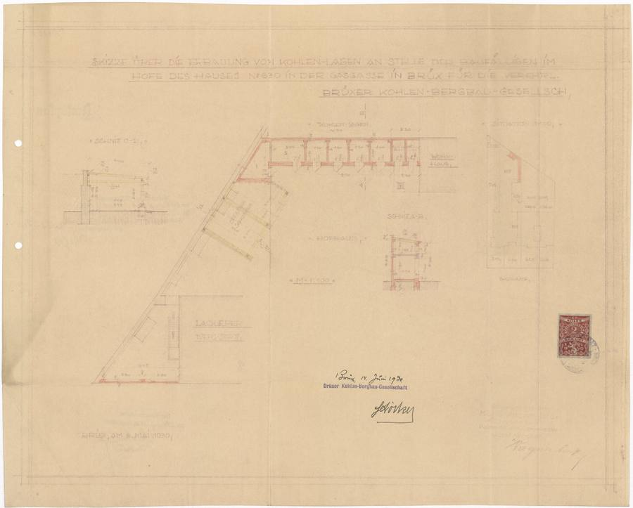
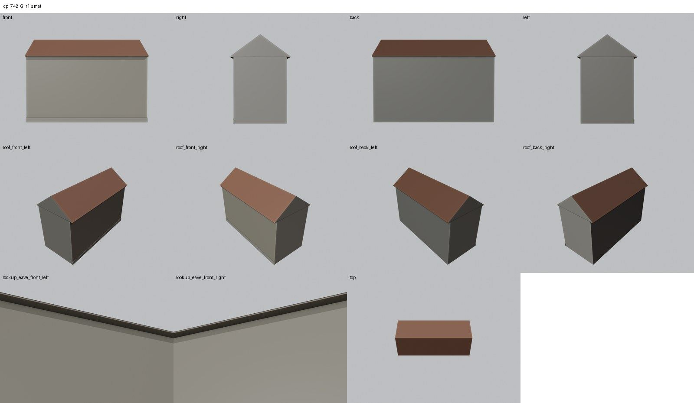
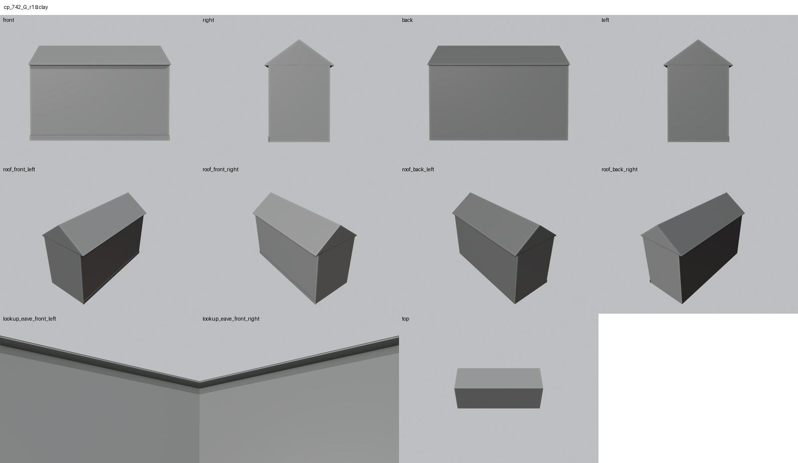
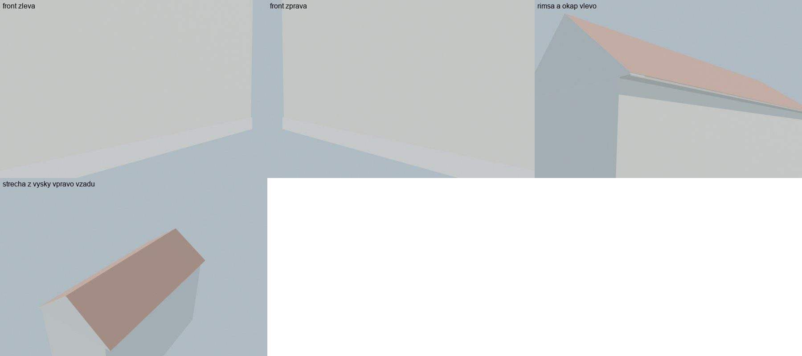

Identita domu
Upozornění – hypotéza – zbořená dvorní stavba: Dvorní obytný dům (čp. 742) ve dvoře domu 630 u hranice s 625. Je doložen na plánu uhelných kůlen z 6. 5. 1930, před dokumentací KSPPOP byl zbořen; GIS 1938 ho nevede. Poloha podle dvou skic KSPPOP a plánu 1930, šířka 4,6 m podle plánu 1:100 (skici ukazují ~6 m), hloubka ~10,6 m podle skic. Výška (2 podlaží), střecha a průčelí do dvora jsou odhad, otvory nemodelovány.
Skici KSPPOP k domům 630 a 574 kreslí ve dvoře domu 630 u hranice s 625 obdélník „(742) kdysi nádvorní dům / zde býval nádvorní dům“. Plán uhelných kůlen ve dvoře domu 630 v Gasgasse (Brüxer Kohlen-Bergbau-Gesellschaft, 6. 5. 1930, 1 : 100) ukazuje na stejném místě za kůlnami „Wohnhaus“ široký asi 4,6 m. Situace téhož plánu ale píše číslo 742 k levé hranici za domem 594 (= 574) – pravděpodobně jde o číslo parcely nebo posunutý popisek.
Poznámka k identitě a GIS: GIS 1938 tento dvorní dům nevede; poloha je odvozena ze skic KSPPOP a plánu z roku 1930 vůči domu 630.
Použité prameny: skici KSPPOP cp_630_001 a cp_574_001; plán cp_742_001 (6. 5. 1930) – půdorys kůlen, řez a situace.
Přílohy v databázi (1)
Všechny přílohy struktury 742 v databázi Libuše, načtené živě 25. 10. 2026 (jen pro čtení) a otevřené. Kliknutím otevřete větší náhled.


plán / výkres
SHA-256 2741c3abc84c…
Geometrie
| Revize geometrie | r1 |
|---|---|
| Úsek ulice | S1 · jižní strana VSV ramene |
| Poloha | bez budovy GIS – poloha zaměřena z pramenů (viz identita) |
| Šířka průčelí | 10,60 m |
| Výška okapu | 5,80 m (odhad) |
| Podlaží | 2 (hypotéza) |
| Střecha podle pramenů | sedlová střecha 40° podél delší osy – odhad |
| Otvory / vikýře v modelu | 0 / 0 |
| Polygonů | 49 |
| Platnost modelu | hypotéza – zbořená dvorní stavba (stav kolem 1930); platí do: poslední doklad 1930; zbořeno před dokumentací KSPPOP (GIS 1938 ho nevede) |
Kontrolní pohledy






Kontrola modelu
| Brána geometrie (automaticky) | v pořádku |
|---|---|
| Uzavřené podkroví (GLB) | v pořádku: zásahy paprsků 0, nekryté zdivo 0,00 m², střecha nad prázdnem 0,00 m² |
| UV mapování | v pořádku: 0 zkolabovaných ploch z 49 |
| Síť | v pořádku |
| Počty otvorů proti pramenu | souhlasí |
| Vizuální kontrola | prošla (Claude (Opus 5.5), 2026-11-25) |
| Kontrola střechy | prošla |
- hlavní průčelí: bez fotografie fasády – otvory nemodelovány (souhlasí)
Textury
bez textur (hypotéza – zbořená dvorní stavba – jen prosté materiály)
Až Codex dodá texturovaný model, objeví se v prohlížeči nahoře volba Textury (Codex).
Hypotézy
Upozornění – hypotéza – zbořená dvorní stavba: Dvorní obytný dům (čp. 742) ve dvoře domu 630 u hranice s 625. Je doložen na plánu uhelných kůlen z 6. 5. 1930, před dokumentací KSPPOP byl zbořen; GIS 1938 ho nevede. Poloha podle dvou skic KSPPOP a plánu 1930, šířka 4,6 m podle plánu 1:100 (skici ukazují ~6 m), hloubka ~10,6 m podle skic. Výška (2 podlaží), střecha a průčelí do dvora jsou odhad, otvory nemodelovány.
Vše níže je model_hypothesis, provisional, locked: false.
- šířka 4,6 m podle plánu 1930 (skici ukazují asi 6 m)
- hloubka 10,6 m a poloha jsou průměrem dvou skic KSPPOP
- dvě podlaží, střecha a průčelí do dvora jsou odhad
- otvory nejsou modelovány – fotografie neexistuje
- poslední doklad 1930; zbořeno před dokumentací KSPPOP
Technický zápis hypotéz v plánu modelu (revize r1, bez diakritiky)
- poloha: průměr dvou skic KSPPOP (přední stěna 20,3/22,0 m, zadní 32,0/31,5 m od uliční čáry 630)
- šířka 4,6 m podle plánu 1930 (skici ~5,9–6,2 m)
- dvě podlaží (okap 5,8 m) a sedlová střecha 40° podél delší osy – odhad (sousední dvorní dům 625 má pavlač)
- průčelí do společného dvora 574/630 (na východ) – odhad
- otvory nemodelovány
Historie revizí modelu
- r1 25.11.2026: zbořená dvorní stavba bez GIS jako hypotéza (dotaz uživatele 25. 11. 2026: „v GISu není všechno“)
Soubory
- Geometrie čp. 742, GLB (revize r1)
- Pracovní model: F:\MOST\output\u_hriste_street_claude_2026-10-25\houses\cp742\r1\cp_742_G_r1.blend
- Plán modelu: F:\MOST\output\u_hriste_street_claude_2026-10-25\houses\cp742\geometry_plan.json